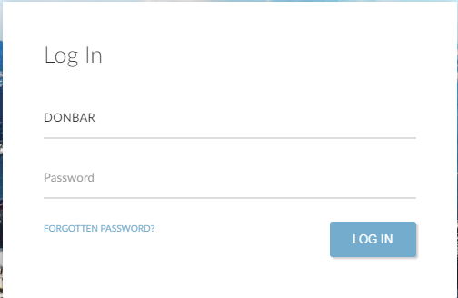
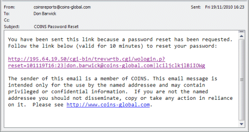

Logging In to
There are different ways you might connect to , depending on how your company has set things up. For example, you might:
- Click an icon on your Windows desktop.
- Choose an item on the Windows Start menu.
- Choose a ite from your browser’s ites list.
- Click a link on an Intranet page.
If is set up to log you in automatically, this takes you straight in to . If not, displays the login page. You can log in using either your User ID or your email address.
To log in to :
- At the login screen, enter your user ID or email address, followed by your password. (For security, does not display your password as you type. Depending on how is configured, your password may be case-sensitive.)

- If displays the message Invalid User/Password, click OK and enter your user ID (or email address) and password again. Check that you type them correctly, and that you have not pressed the Caps Lock key by mistake. If you are still unable to log in, contact your System Administrator or reset your password (see below).
Forgotten Passwords
If you forget your password, either contact your System Administrator, who will be able to provide you with a new password, or if the reset password option is available, follow the instructions below:
- Click the Forgotten Password link below the Password field on the login screen.
- At the prompt, enter your email address (this is the email address recorded on your user record).
will send a Password Reset email to this address.

- Click the link in the email - this opens a window that allows you to enter a new password.
The link is only valid for 10 minutes, so open the email promptly.
- Enter your new password in both fields.
You can now continue to use . Next time you log in, you will need to use the new password you just entered.
Logging in - configuration
The user ID is stored in a cookie after a successful login. It is retrieved for a new login and the User ID fill in is defaulted to its value by the login screen. This only occurs if the browser setting allows the use of permanent cookies.
To allow users to log in using their email address, a unique email address must be entered for the user in Users.
For more information on automatic logins, see Remember User ID - Overview, Auto Login and Configure LDAP Directory User Authentication.
For more information about Passport, see Enabling__Passport_Login.htm.